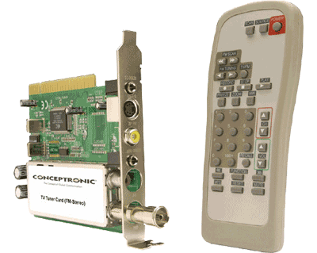

3.2. Realización
Cuando hablamos de videos educativos, la etapa de realización puede ser utilizando cámaras digitales o capturando el escritorio del ordenador para realizar una explicación del uso determinado de una herramienta informática.
3.2.1. En software libre hay infinidad de programas para la captura de escritorio:
-
Captura de imágenes estáticas: utilizando el Gimp, la tecla de <impr pant>, el uso del paquete Screenshot, entre otros
-
Captura de imágenes dinámicas: xvidcap, gtk-recordmydesktop, Byzanz, entre otros. (Capturar nuestro escritorio)
 3.2.2. Grabar imágenes externas al ordenador mediante:
-
videocámaras indicadas en el apartado 3.1
-
utilizar como fuente la TV: requerimos de una tarjeta captura de video. Con dicha tarjeta, y su correcta instalación en el sistema, podemos digitalizar videos en formatos analógicos antiguos tales como: VHS, VHS-C, Hi8, Betamax y más.
Una vez que disponemos del material grabado, que pueden ser colecciones de videos, grabaciones en diversos formatos y dispositivos procedemos a realizar el trabajo de montaje o edición en el siguiente apartado.
Jo.R.C.A. 2004 - 2011

Edición de Audio y Video con Software Libre by José Ramón Cerdeira Alonso is licensed under a Creative Commons Reconocimiento-No comercial-Compartir bajo la misma licencia 3.0 España License